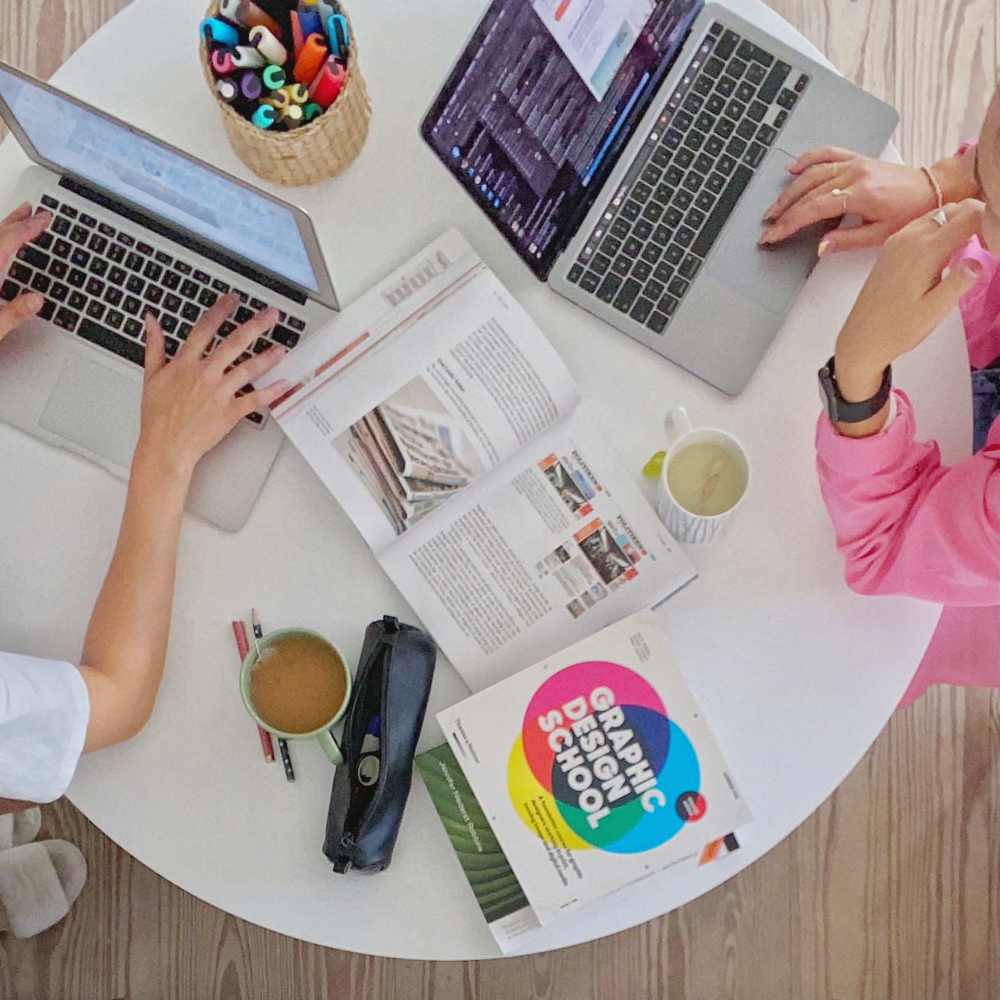
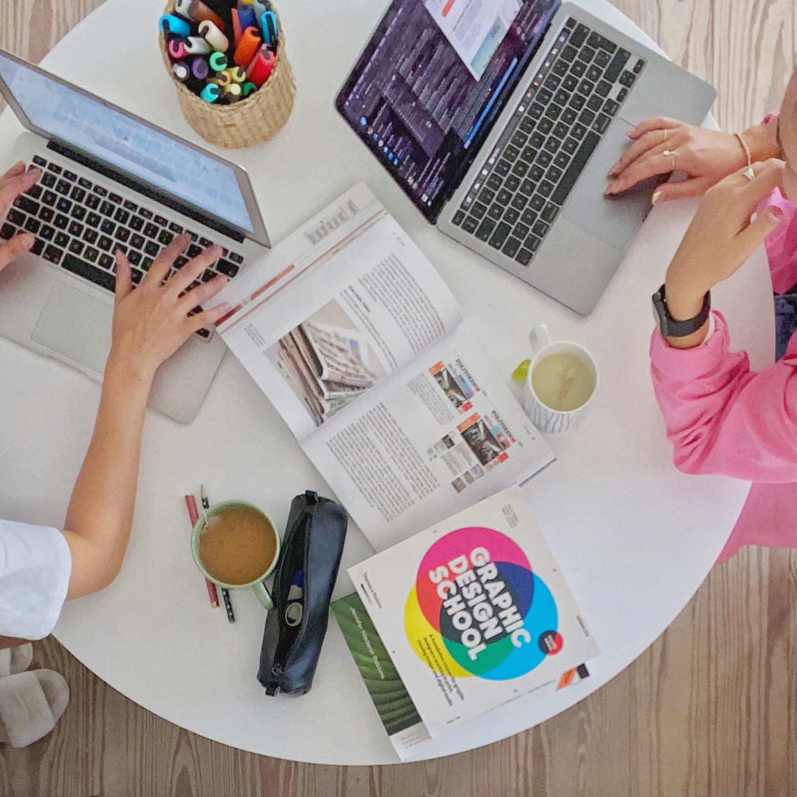

Hvis du føler, du bliver stresset af, at du både skal nå skole, hobbyer og venner - hvorfor så ikke klare to fluer med ét smæk?
Der er masser ting, man kan lave med sine venner, uden det tager tid fra det, du skal nå.
o Lav en lektie date. Sid og hyg med lektierne og en kop kaffe.
o Spis aftensmad sammen. Hyg om dine måltider i selskab med en ven.
o Dyrk jeres hobbyer. Tag din ven med i fitness eller hold en krea-dag.
Pludseligt føles det som om, du når en hel masse, samtidigt med du hygger dig.
Har du nogensinde prøvet vinterbadning? Vinterbadning stimulerer en masse glædeshormoner såsom serotonin, dopamin og noradrenalin. Dermed styrker det dit mentale helbred og forskere mener, at det formentligt kan forebygge depression.
Så hvis du føler et generelt underskud i hverdagen, er det oplagt for dig, at begynde på vinterbadning!
Læs mere om vinterbadning i vores næste udgivelse, hvor der kommer et fuldt indslag!